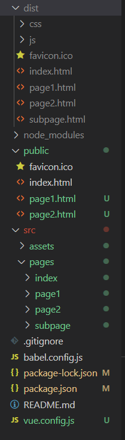

const path = require('path')
const glob = require('glob')
const resolve = (dir) => path.join(__dirname, dir)
const PAGES_PATH = './src/pages/*/*.js'
module.exports = {
// publicPath: '/test/', // 设置部署应用包时的基本URL
publicPath: process.env.NODE_ENV === 'production' ? '/test/' : './', // 开发环境与生产环境的区分
//outputDir: 'testbuild', // 运行build 时生产的构建文件的目录，默认'dist'
// assetsDir: 'assets', // build之后生成的静态资源放置的目录，默认''
// indexPath: 'test/home.html', // build之后生成的index.html的路径
// filenameHashing: true, // build之后生成的静态资源默认情况下加了hash值以控制静态资源的缓存，默认是true
// pages: {
// index:{
// entry: 'src/pages/index/main.js', // page入口
// template: 'public/index.html', // public 里面的文件
// filename: 'index.html', // build之后生成的文件及路径名
// title: 'Index Page',
// chunks: ['chunk-vendors', 'chunk-common', 'index']
// },
// page1:{
// entry: 'src/pages/page1/main.js', // page入口
// template: 'public/page1.html', // public里面的文件
// filename: 'page1.html', // build之后生成的文件及路径名
// title: 'page1', // 使用此项时，// template 中的 title 标签需要是 <title><%= htmlWebpackPlugin.options.title %></title>
// chunks: ['chunk-vendors', 'chunk-common', 'page1'] // 提取出来的通用 chunk 和 vendor chunk
// },
// page2:{
// entry: 'src/pages/page2/main.js', // page入口
// template: 'public/page2.html',
// filename: 'page2.html', // build之后生成的文件及路径名
// title: 'Index Page',
// chunks: ['chunk-vendors', 'chunk-common', 'page2']
// }
// },
pages:setPages(),
productionSourceMap: false, // 如果你不需要生产环境的 source map，可以将其设置为 false 以加速生产环境构建
// devServer: {
// port: '1111',
// // proxy: 'http://localhost:8080' //告诉开发服务器将任何未知请求 (没有匹配到静态文件的请求) 代理到http://localhost:8080。
// proxy: {
// '/api': {
// //要访问的跨域的域名
// target: 'http://localhost:8080',
// ws: true, // 是否启用websockets
// secure:false, // 使用的是http协议则设置为false，https协议则设置为true
// changOrigin: true, //开启代理：在本地会创建一个虚拟服务端，然后发送请求的数据，并同时接收请求的数据，这样客户端端和服务端进行数据的交互就不会有跨域问题
// pathRewrite: {
// '^/api': ''
// }
// }
// }
// },
chainWebpack: config => {
/* 自动导入公共文件*/
const types = ['vue-modules', 'vue', 'normal-modules', 'normal']
types.forEach(
type => addStyleResource(config.module.rule('scss').oneOf(type))
)
/* 添加别名*/
config.resolve.alias
.set('@title', resolve ('src/assets/commonPublic/title.vue'))
}
}
/**
* 注入公共样式
* @param rule
*/
function addStyleResource (rule) {
rule.use('style-resource')
.loader('style-resources-loader')
.options({
patterns: [
path.resolve(__dirname, 'src/assets/common.scss') // resolve()返回绝对路径
]
})
}
/**
* 多页面跳转
*/
function setPages () {
let pages = {}
glob.sync(PAGES_PATH).forEach(filepath => {
let fileList = filepath.split('/')
let fileName = fileList[fileList.length - 2]
pages[fileName] = {
entry: filepath,
template:`public/${fileName}.html` , // 'public/index.html'
filename: `${fileName}.html`,
// title:
chunks: ['chunk-vendors', 'chunk-common', fileName]
}
})
return pages
}对应生成的dist文件目录及多页面配置时的文件目录如下：
